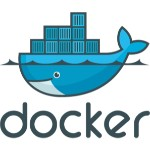
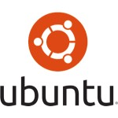

READY.
Kimler kullanıyor?
Go dili yakın bir tarihte geliştirilmiş olsa da büyük projeler için ciddi tercih edilen bir teknoloji haline gelmesi uzun sürmedi. Bu girişim ve firmalardan bazıları şunlardır;
Daha geniş bir kullanıcı listesine ulaşmak için; https://github.com/golang/go/wiki/GoUsers
Golang tam olarak ne için ortaya çıktı?
Go programlama dili Google tarafından kendi sorunlarını çözmek için başlatılmıştır. Bu nedenle Go’ya eklenen ya da eklenmeyen tüm özellikler tamamen yılların “büyük projelerdeki yazılım tecrübeleri” ile belirlenmiş ve alınmış kararlardır. Mesela Go’yu biraz incelediğinizde “Go’da neden jenerikler yok?” gibi bir soru aklınıza gelebilir ki bunu soran ilk kişi değilsiniz. Buna Go geliştirici ekibinin verdiği yanıt ise özetle; “Jenerikler performanslı-hızlı değil, henüz bu şartlarda bir çözüm bulamadık, bulduğumuzda ekleriz”. Go ile ilgili bakış açısı bu kadar net aslında. Amaç, az dil özelliği ve kuralıyla esnek, hızlı, performanslı ve güçlü bir dil oluşturmaktır!
Go dili sistem programlama odağıyla geliştirilmiştir. Yani sunucu ve alt sistemler yazmak için ideal bir çözüm olarak düşünülebilir. Ancak bunun yanında web için de hem hızlı geliştirme hem de yüksek performansıyla kaliteli projeler üretmenizi sağlayabilir. Aynı zamanda native olarak henüz tam uyumlu kullanılabilir olmasa da Google, Android işletim sistemi üzerinde Go kullanılabilmesi için bir mobil proje yürütmektedir. Go’nun github sayfası üzerinden mobil çalışma kaynaklarına ulaşabilir, internetten Go ile geliştirilen Android uygulama örneklerine inceleyebilirsiniz.
Go dili gömülü sistemler için de kullanılabilmektedir. Ancak genel olarak bu alan için henüz yeterli görülmemektedir. Gene ancak, Go’nun bu alanda da bir başarı hedeflediğini ve zamanla gömülü sistemler için de kendini genişleteceğini söyleyen otoriteler mevcuttur. Kaldı ki, gömülü(embedded) sistemler için C mi, C++ mı gibi bir soru bile C/C++ geliştiricileri arasında yıllardır tartışılan bir konudur.